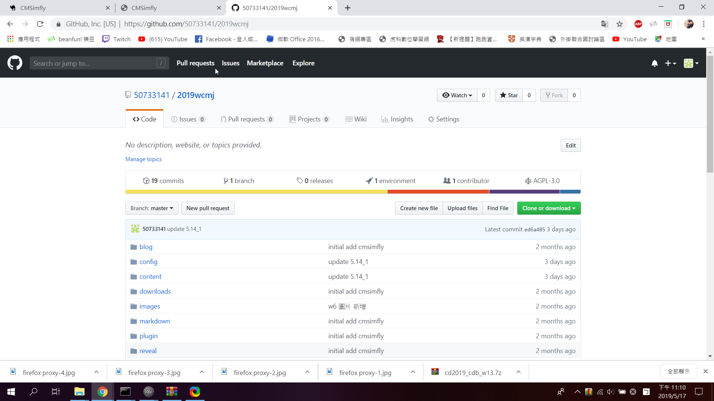
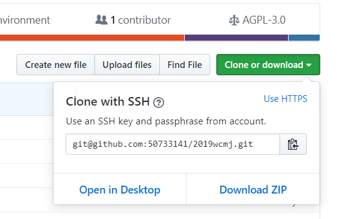
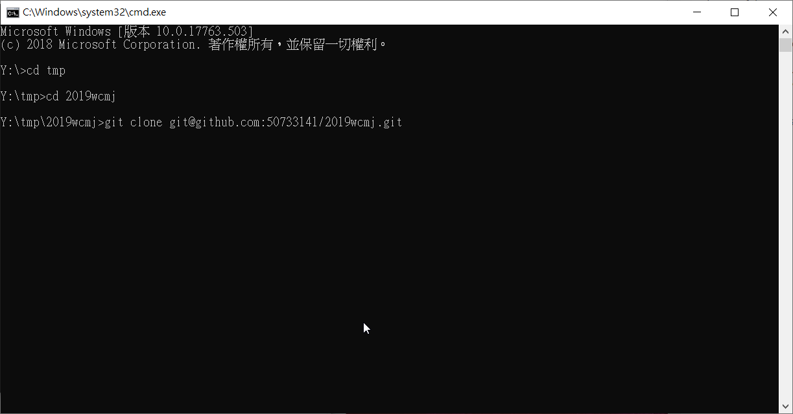
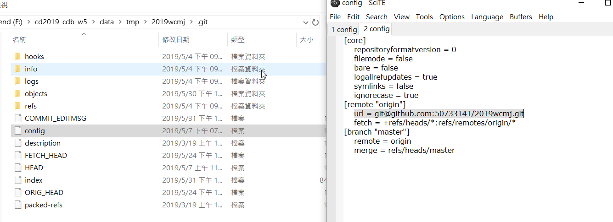

關閉操作系統儲存 Github 帳號密碼設定
目前 KMOL 所使用的 PortableGIT, 內建設定的 credential helper 為 manger, 表示當使用者使用 git push 時內建會跳出讓使用者輸入帳號密碼的對話視窗, 以讓使用者輸入帳號密碼
我們可使用:git config --edit --system指令
帶出 vi 編輯器, 編輯 git 指令所使用的系統設定, 只要將 credential 項目中的 helper = manager 刪除後儲存, 即可關閉內定將使用者 Github 帳號密碼儲存於操作系統的問題.
示範影片如下:
建立OPENSSH格式的KEY及設定
在可攜系統的命令列視窗中, 以 sh 執行 Git 的 shell, 使用
ssh-keygen -t rsa -b 4096 -C "This is my key"
建立位於 y:\home\.ssh\id_rsa 的 Private Key 與位於 y:\home\.ssh\id_rsa.pub 的 Public Key, 並且將 id_rsa.pub 的內容, 轉貼到 Github 帳號 settings 中 SSH and GPG keys 項目內的 SSH Public Key 區.
key成功建立以及設定之後，回到自己的github網站並在clone or download裡選擇USE SSH，複製後再可攜式系統裡進行git clone，待畫面顯示done即完成，之後將倉儲資料夾裡.ssh中的config檔案開啟，並將url選項改成ssh，即完成。




ssh 連線透過 proxy server, 必須設定 y:\home\.ssh\config 如下:
ProxyCommand y:/PortableGit/mingw64/bin/connect.exe -H proxy.kmol.info:3128 %h %p
# for user1
# url = git@github.com_user1:user1/cmstest.git
Host github.com_user1
User git
Port 22
Hostname github.com
IdentityFile "y:\home\.ssh\id_rsa_user1"
TCPKeepAlive yes
IdentitiesOnly yes
# for user2
# url = git@github.com_user2:user2/user2.com.git
Host github.com_user2
Port 22
Hostname github.com
IdentityFile "y:\home\.ssh\id_rsa_user2"
TCPKeepAlive yes
IdentitiesOnly yes
示範影片如下: